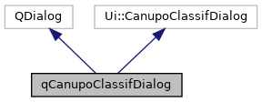
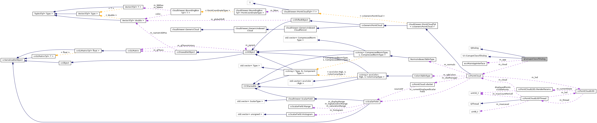

|
ACloudViewer
3.9.3
A Modern Library for 3D Data Processing
|
|
ACloudViewer
3.9.3
A Modern Library for 3D Data Processing
|
CANUPO plugin's classification dialog. More...
#include <qCanupoClassifDialog.h>


Public Types | |
| enum | CORE_CLOUD_SOURCES { ORIGINAL , OTHER , SUBSAMPLED , MSC_FILE } |
| "Sources" of core points More... | |
Public Member Functions | |
| qCanupoClassifDialog (ccPointCloud *cloud, ecvMainAppInterface *app) | |
| Default constructor. More... | |
| CORE_CLOUD_SOURCES | getCorePointsCloudSource () const |
| Returns the selected source for core points. More... | |
| ccPointCloud * | getCorePointsCloud () |
| Get core points cloud (if any) More... | |
| QString | getMscFilename () const |
| Returns MSC file name (if source == MSC_FILE) More... | |
| double | getConfidenceTrehshold () const |
| Returns the confidence threshold. More... | |
| bool | useSF () const |
| int | getMaxThreadCount () const |
| Returns the max number of threads to use. More... | |
| void | loadParamsFromPersistentSettings () |
| Loads parameters from persistent settings. More... | |
| void | saveParamsToPersistentSettings () |
| Saves parameters to persistent settings. More... | |
Protected Slots | |
| void | browseClassifierFile () |
| void | browseMscFile () |
Protected Attributes | |
| ecvMainAppInterface * | m_app |
| Gives access to the application (data-base, UI, etc.) More... | |
| ccPointCloud * | m_cloud |
| Associated cloud. More... | |
CANUPO plugin's classification dialog.
Definition at line 16 of file qCanupoClassifDialog.h.
"Sources" of core points
| Enumerator | |
|---|---|
| ORIGINAL | |
| OTHER | |
| SUBSAMPLED | |
| MSC_FILE | |
Definition at line 24 of file qCanupoClassifDialog.h.
| qCanupoClassifDialog::qCanupoClassifDialog | ( | ccPointCloud * | cloud, |
| ecvMainAppInterface * | app | ||
| ) |
Default constructor.
Definition at line 28 of file qCanupoClassifDialog.cpp.
References browseClassifierFile(), browseMscFile(), ccPointCloud::getCurrentDisplayedScalarField(), qCanupoTools::GetEntityName(), loadParamsFromPersistentSettings(), m_app, and CV_TYPES::POINT_CLOUD.
|
protectedslot |
Definition at line 230 of file qCanupoClassifDialog.cpp.
References Classifier::FileHeader::classifierCount, computer, Classifier::FileHeader::descID, Classifier::FileHeader::dimPerScale, error(), ScaleParamsComputer::GetByID(), ScaleParamsComputer::getName(), and Classifier::Load().
Referenced by qCanupoClassifDialog().
|
protectedslot |
Definition at line 212 of file qCanupoClassifDialog.cpp.
Referenced by qCanupoClassifDialog().
| double qCanupoClassifDialog::getConfidenceTrehshold | ( | ) | const |
Returns the confidence threshold.
Definition at line 75 of file qCanupoClassifDialog.cpp.
Referenced by qCanupoPlugin::doClassifyAction().
| ccPointCloud * qCanupoClassifDialog::getCorePointsCloud | ( | ) |
Get core points cloud (if any)
Returns either the input cloud (ORIGINAL) or the other cloud specified in the dedicated combo box (OTHER). It can also return a null pointer if the user has requested sub-sampling (SUBSAMPLED) or MSC file (MSC_FILE).
Definition at line 111 of file qCanupoClassifDialog.cpp.
References qCanupoTools::GetCloudFromCombo(), m_app, and m_cloud.
Referenced by qCanupoPlugin::doClassifyAction().
| qCanupoClassifDialog::CORE_CLOUD_SOURCES qCanupoClassifDialog::getCorePointsCloudSource | ( | ) | const |
Returns the selected source for core points.
Definition at line 92 of file qCanupoClassifDialog.cpp.
References MSC_FILE, ORIGINAL, OTHER, and SUBSAMPLED.
Referenced by qCanupoPlugin::doClassifyAction().
| int qCanupoClassifDialog::getMaxThreadCount | ( | ) | const |
Returns the max number of threads to use.
Definition at line 87 of file qCanupoClassifDialog.cpp.
Referenced by qCanupoPlugin::doClassifyAction().
| QString qCanupoClassifDialog::getMscFilename | ( | ) | const |
Returns MSC file name (if source == MSC_FILE)
Definition at line 107 of file qCanupoClassifDialog.cpp.
Referenced by qCanupoPlugin::doClassifyAction().
| void qCanupoClassifDialog::loadParamsFromPersistentSettings | ( | ) |
Loads parameters from persistent settings.
Definition at line 123 of file qCanupoClassifDialog.cpp.
References useSF().
Referenced by qCanupoClassifDialog().
| void qCanupoClassifDialog::saveParamsToPersistentSettings | ( | ) |
Saves parameters to persistent settings.
Definition at line 186 of file qCanupoClassifDialog.cpp.
Referenced by qCanupoPlugin::doClassifyAction().
| bool qCanupoClassifDialog::useSF | ( | ) | const |
Returns whether a SF should be used to classify points with low confidence
Definition at line 83 of file qCanupoClassifDialog.cpp.
Referenced by qCanupoPlugin::doClassifyAction(), and loadParamsFromPersistentSettings().
|
protected |
Gives access to the application (data-base, UI, etc.)
Definition at line 60 of file qCanupoClassifDialog.h.
Referenced by getCorePointsCloud(), and qCanupoClassifDialog().
|
protected |
Associated cloud.
Definition at line 63 of file qCanupoClassifDialog.h.
Referenced by getCorePointsCloud().